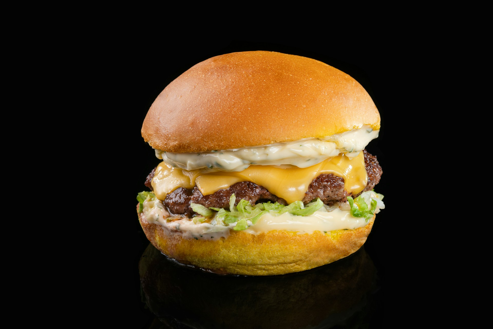

When it comes to Burgers at McDonald's Menu, few names are as synonymous with fast food as McDonald’s. Whether you’re grabbing a quick bite on the go or indulging in a cheat day feast, McDonald’s has a burger for every occasion. From the classic Big Mac to the spicy McSpicy, the Burgers at McDonald's Menu are a veritable playground for burger lovers. Let’s dive into the delicious world of McDonald’s burgers and explore what makes each one special, with a sprinkle of humor to keep things light.
We can’t talk about McDonald’s burgers without giving the Big Mac its rightful place at the top of the list. Introduced in 1967, this burger has become a global icon. The Big Mac is like that dependable friend who’s always there when you need them—comforting, reliable, and never disappoints.
With its two all-beef patties, special sauce, lettuce, cheese, pickles, onions, and a sesame seed bun, the Big Mac is a masterpiece of balance. The special sauce, a closely guarded secret, adds a tangy kick that elevates the burger from good to great. It’s the kind of burger that makes you wonder, “Why doesn’t every burger have a middle bun?”
If the Big Mac is the life of the party, the Quarter Pounder with Cheese is the strong, silent type. This burger is all about the beef—literally. With a quarter-pound patty (before cooking, of course), it’s a burger that satisfies your hunger and then some.
The Quarter Pounder with Cheese is a no-nonsense burger. It doesn’t come with any frills or fancy sauces, just a solid foundation of beef, cheese, onions, pickles, ketchup, and mustard. But don’t let its simplicity fool you—sometimes, less is more, and this burger is proof of that. It’s the kind of burger that makes you feel like you’ve really had a meal.
For those who like a little kick in their burger, the McSpicy is here to deliver. This burger brings the heat with a spicy chicken fillet that’s crispy on the outside and juicy on the inside. It’s topped with lettuce and a creamy mayo that helps cool things down—just a little.
The McSpicy is not for the faint of heart. It’s the burger equivalent of a roller coaster: thrilling, a little intense, but totally worth it. If you’re the type who likes to challenge your taste buds, this is the burger for you. And hey, if it gets too hot, there’s always a milkshake nearby to cool things down.
In a world where dietary preferences are as diverse as ever, McDonald’s has stepped up with the McPlant—a plant-based burger that’s as delicious as its meaty counterparts. Created in partnership with Beyond Meat, the McPlant is designed to look, cook, and satisfy like a beef burger.
With a juicy plant-based patty, vegan sandwich sauce, lettuce, tomato, pickles, onions, ketchup, mustard, and a vegan sesame seed bun, the McPlant offers a taste of the future. It’s a burger that’s not just for vegans but for anyone looking to try something new. Plus, it’s nice to know that even the cows are taking a break now and then.
If the regular Quarter Pounder with Cheese isn’t enough to satisfy your burger cravings, the Double Quarter Pounder with Cheese is here to save the day. This burger is exactly what it sounds like—double the beef, double the cheese, and double the satisfaction.
With two quarter-pound patties, this burger is a hefty meal that’s perfect for those days when you’re extra hungry or just feeling a little indulgent. It’s the kind of burger that makes you loosen your belt a notch or two but leaves you with a big smile on your face. After all, sometimes more really is more.
Why should beef have all the fun? The Chicken Big Mac is a poultry-packed twist on the classic Big Mac, swapping out the beef patties for crispy chicken fillets. It still has all the other elements that make a Big Mac great—special sauce, lettuce, cheese, pickles, onions, and that iconic middle bun.
The Chicken Big Mac is like the Big Mac’s cooler, laid-back cousin. It’s a little different, but it’s still got that same great taste that you know and love. If you’re in the mood for something familiar yet new, this is the burger for you. Plus, it’s a great option if you’re trying to cut back on red meat but still want to enjoy a classic McDonald’s experience.
One of the most eagerly anticipated returns on the McDonald’s menu is the Big Tasty. This burger is like a celebrity that only shows up now and then, making everyone excited when it does. With its large beef patty, Emmental cheese, onions, tomato, and a smoky sauce, the Big Tasty lives up to its name.
The Big Tasty is a burger that doesn’t mess around. It’s big, it’s bold, and it’s delicious. If you’re lucky enough to catch it while it’s on the menu, don’t hesitate. It’s the kind of burger that leaves a lasting impression—and not just on your taste buds.
No burger list would be complete without a nod to the Filet-O-Fish. Sure, it’s not a burger in the traditional sense, but it’s earned its place on the McDonald’s menu. With its crispy fish fillet, tartar sauce, and a slice of cheese on a steamed bun, the Filet-O-Fish is a unique offering that’s perfect for those who prefer something a little lighter.
The Filet-O-Fish is like the quirky friend in your group—the one who marches to the beat of their own drum but is always a delight to have around. It’s a great option for fish lovers or anyone looking for a change of pace from the usual beef or chicken options.
While it may not have the same fame as the Big Mac or Quarter Pounder, the McChicken Sandwich has quietly built a loyal following. With its crispy chicken patty, lettuce, and mayo, all sandwiched between a sesame seed bun, it’s a simple yet satisfying option.
The McChicken Sandwich is like the underdog of the McDonald’s burger lineup. It’s not flashy, but it gets the job done. It’s the kind of burger you can always count on, whether you’re in a rush or just craving something comforting. Plus, it’s a great entry-level option for those who are new to McDonald’s or just want something familiar.
Whether you’re a fan of the classics or looking to try something new, the burger lineup at McDonald’s has something for everyone. From the iconic Big Mac to the spicy McSpicy, there’s a burger to suit every mood and craving. And with new options like the McPlant, even those with dietary restrictions can join in on the fun.
So next time you’re at McDonald’s, take a moment to appreciate the variety of burgers on offer. Whether you stick with your tried-and-true favorite or venture out to try something different, you’re in for a treat. After all, McDonald’s didn’t become a global fast food giant by accident—they know a thing or two about making a great burger.